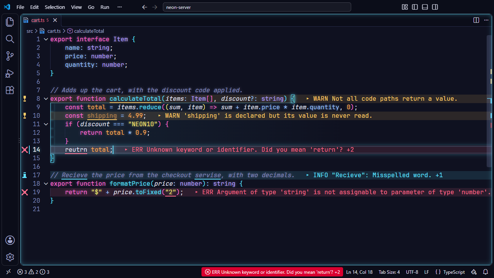

Problem Lens
Stop hovering over squiggly lines or toggling the problems panel. Stylesmith renders errors, warnings and info inline, right next to your code, giving you immediate feedback.

Zero Friction
By rendering diagnostics inline, you see typos and logical errors immediately. You do not need to open the terminal or move your mouse to discover what broke.
Fully Integrated
Problem Lens uses the diagnostic colors of your active palette. Errors, warnings and info match the current theme instead of clashing with default editor colors.
Error signal
Turn on stylesmith.problems.errorSignal, and when the number of
errors in your files goes up, the status bar shows the new count for a moment,
on the error background. It shows once, at most every two seconds, so it never
flashes; click it to open the Problems panel. Off by default.